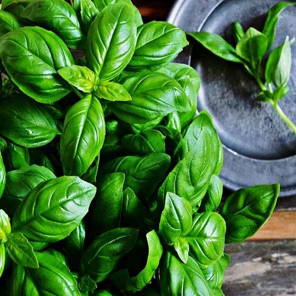

Le Basilic
Le Basilic ou Basilic romain (Ocimum basilicum L.) est une espèce de plantes herbacées thérophytes de la famille des Lamiacées (labiacées, labiées), cultivée comme plante aromatique et condimentaire. La plante est parfois appelée Basilic commun, Basilic aux sauces, Herbe royale ou Grand Basilic. Le Basilic commun est largement employé dans la cuisine italienne, d'autres variétés de basilic sont répandues dans certaines cuisines asiatiques : Taïwan, Thaïlande, Viêt Nam, Cambodge et Laos. Cette plante a eu plusieurs synonymes scientifiques dont Ocimum basilicum var. glabratum Benth, Ocimum basilicum var. majus Benth.
Source